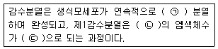
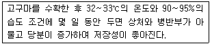
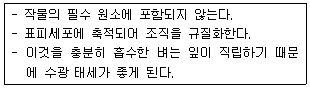

종자기능사 (2014-01-26 기출문제)
1과목: 종자(임의구분)
1. 수정후 화분관이 자라 난세포와 결합하기 위하여 들어가는 구멍은?
- 주피
- 주공
- 주심
- 배낭
(정답률: 84%)

2. 종자가 발아하기에 알맞은 내부조건과 환경조건이 되어도 발아하지 않는 상태를 가리키는 것은?
- 미숙
- 후숙
- 휴면
- 불발아
(정답률: 83%)
3. 종자 전염병의 생물학적 방제 방법으로 가장 적합한 것은?
- 종자의 종피를 제거하여 발아를 촉진한다.
- 종자의 종피에 길항미생물을 부착한다.
- 종자에 코팅(Coationg)처리를 한다.
- 종자에 소독제를 넣어 펠레팅(Pelleting)을 한다.
(정답률: 78%)
4. 발아에 대한 설명으로 틀린 것은?
- 발아율(發芽率)은 파종된 총 종자 수에 대한 발아종자수의 비율이다.
- 발아세(發芽勢)는 정해진 시일 내의 발아율이다.
- 발아기(發芽期)는 대부분(80% 이상)이 발아한 날이다.
- 발아시(發芽始준)는 발아한 것이 처음 나타난 날이다.
(정답률: 73%)
5. 종자의 표준발아검사 시 치상 재료가 갖추어야 할 성질이 아닌 것은?
- 반드시 샬레에다 치상하여야 한다.
- 발아하는 유묘에 유독하지 않아야 한다.
- 병원성의 미생물과 포자가 없어야 한다.
- 발아를 위해 적당한 투기성과 보습성이 있어야 한다.
(정답률: 85%)
6. 종자의 수분 흡수에 대한 설명으로 옳은 것은?
- 보리의 흡수량은 온도에 따라 차가 적지만 흡수속도는 온도가 낮아짐에 따라 빨라진다.
- 담배종자의 흡수속도는 온도가 높아지면 늦어지며 고온에서는 오히려 빨라진다.
- 벼 종자의 흡수율 및 흡수속도는 밭벼 ＞ 건도(乾道) ＞ 논벼 순이다.
- 종자 흡수량이 최대로 되는 시간은 작물의 종류에 상관 없이 거의 같다.
(정답률: 68%)
7. 배젖 종자인 것은?
- 해바라기
- 유채
- 팥
- 밀
(정답률: 69%)
8. 종자 발아를 촉진시키는데 널리 이용되고 있으며 미국의 공인종자검사자협회(AOSA)와 국제종자검사협회(ISTA)에서도 추진하고 있는 발아촉진 물질은?
- 옥신
- 사이토키닌
- 과산화수소
- 질산칼륨
(정답률: 52%)
9. 종자 전염성 병을 수확 전에 방제하는 방법이 아닌 것은?
- 이형 식물체 제거
- 저항성 품종 이용
- 병든 식물체 제거
- 퇴화하지 않는 종자 이용
(정답률: 57%)
10. 바람직한 채종의 요건으로 적합하지 않는 것은?
- 우량 종자를 생산할 수 있을 것
- 값싸게 채종할 수 있을 것
- 대량생산이 가능할 것
- 고도의 기술을 요할 것
(정답률: 89%)
11. 저장종자의 수명에 가장 큰 영향을 미치는 환경요인은?
- 온도와 공기
- 공기와 습도
- 습도와 온도
- 온도와 광선
(정답률: 88%)
12. 중복수정에 의하여 종자의 씨눈으로 발아하는 것은?
- 웅핵 + 난세포
- 웅핵 + 2개의 극핵
- 화분관핵 + 난세포
- 화분관핵 + 2개의 극핵
(정답률: 66%)
13. 다음 중 종자의 간이 장기저장 포장재료로써 가장 이상적인 것은?
- 플라스틱
- 주석통
- 황마포대
- 종이봉투
(정답률: 63%)
14. 종자휴면의 원인이 아닌 것은?
- 두꺼운 종피
- 발아억제물질
- 배의 미숙
- 산소의 공급
(정답률: 82%)
15. 물 속에서도 발아력이 감퇴하지 않는 종자는?
- 밀
- 벼
- 무
- 콩
(정답률: 87%)
16. 식물은 개화 후 수정이 끝나면 종자로 발달 성숙하는데 화곡류 종자발육 과정에서 알맞은 수확기는?
- 황숙기
- 유숙기
- 고숙기
- 녹숙기
(정답률: 82%)
17. 종자만이 제1차 전염원이 되는 병해는?
- 벼 도열병
- 벼 선충심고병(잎마름선충병)
- 벼 흰잎마름병
- 벼 오갈병
(정답률: 57%)
18. 다음의 작물 중 자연교잡율이 가장 낮은 것은?
- 벼
- 밀
- 보리
- 가지
(정답률: 48%)
19. 표본추출 방법 중 종자를 깨끗한 책상 위에 넓고 고르게 편 후 손으로 파이 자르듯이 나누어 임의로 선택하는 방법은?
- 컵방법
- 기계적 방법
- 균분기(均分機화)이용 방법
- 파이방법(pie method)
(정답률: 85%)
20. 채종포의 규모를 크게 하는 가장 주된 이유는?
- 소량의 종자 생산을 위하여
- 종자의 품질을 좋게 하기 위하여
- 농민의 관심을 얻기 위하여
- 일시에 수익을 높이기 위하여
(정답률: 78%)
2과목: 작물육종(임의구분)
21. 피자식물의 배유(씨젖)는 몇 배체인가?
- 1n
- 2n
- 3n
- 4n
(정답률: 73%)
22. 품종의 퇴화원인과 관계가 가장 적은 것은?
- 근교강세
- 돌연변이
- 자연교잡
- 타 품종의 기계적 혼입
(정답률: 58%)
23. 다음 ( ) 안에 알맞은 내용으로 나열한 것은?

- ㉠ : 1회, ㉡ : 2n, ㉢ : 2n
- ㉠ : 1회, ㉡ : 2n, ㉢ : n
- ㉠ : 2회, ㉡ : 2n, ㉢ : 2n
- ㉠ : 2회, ㉡ : 2n, ㉢ : n
(정답률: 64%)
24. 자식계통(inbred line)의 개량목표로 틀린 것은?
- 자식계통의 생산성이 높아야 한다.
- 일반적으로 조합능력은 낮아야 한다.
- 품질이 양호하고 가공성이 좋아야 한다.
- 내병성, 내충성 및 내도복성 등 내재해성이 높아야 한다.
(정답률: 84%)
25. 세포질·핵유전형의 웅성불임성을 이용하여 일대 잡종 종자를 생산하는 대표적인 작물은?
- 셀러리
- 상추
- 고추
- 시금치
(정답률: 66%)
26. 육종 목표를 세우기 위해 고려해야 할 사항으로 가장 거리가 먼 것은?
- 재래품종의 보급상황, 이들의 결점 및 장점
- 새로운 품종이 보급될 지역의 농민 기술수준
- 새로운 품종이 보급될 고장의 자연조건
- 새로운 품종이 보급될 고장의 경제조건
(정답률: 59%)
27. 속씨식물 배낭형성과정 중 배낭세포의 핵분열 횟수와 핵의 숫자는 몇 개인가?
- 핵분열 횟수 : 1회, 핵의 숫자 : 2개
- 핵분열 횟수 : 2회, 핵의 숫자 : 4개
- 핵분열 횟수 : 3회, 핵의 숫자 : 8개
- 핵분열 횟수 : 4회, 핵의 숫자 : 8개
(정답률: 59%)
28. 작물 육종에서 자가불화합성의 특성을 이용한 결과와 관계가 가장 적은 것은?
- 자연교잡(natural cross-pollination)에 의해 순도가 높은 종자생산
- 단위결과성이 높은 작물의 씨없는 과실생산
- 자가불화합성의 기작을 이용하여 계통이나 개체들의 유연관계 분석
- 잡종강세를 나타내는 일대잡종의 종자생산
(정답률: 52%)
29. 3계(3원) 교잡을 나타낸 방법은?
- (A × B) × C
- AB × BC × CD
- (A × B) × (C × D)
- (A × B) × (C × D) × (E × F)
(정답률: 74%)
30. 자기불화합성에 대한 설명으로 틀린 것은?
- 자가불화합성의 정도는 온도·습도 등의 환경조건에 따라 변화되기도 한다.
- 배우자에 의한 불화합성은 코스모스, 해바라기, 사탕무에서 볼 수 있다.
- 자기불화합성을 유전적으로 보면 배우자불화합성과 접합체불화합성의 두 가지 형이 있다.
- 접합체에 의한 불화합성은 생식세포가 생성되는 식물체, 즉 아포체(芽胞體화)의 반응에 의해 불화합성이 결정되는 것이다.
(정답률: 60%)
31. (A × B) × A 또는 (A × B) × B와 같이 F1을 양친 중 어느 한쪽 친과 교잡하는 것을 무엇이라 하는가?
- 3원교잡
- 복교잡
- 여교잡
- 다계교잡
(정답률: 78%)
32. 순계선발법에서 가장 효율적인 순계선발 대상은?
- F1
- 도입품종
- 육종조작이 많은 식물
- 덜 개량된 자식성 식물
(정답률: 49%)
33. 염색체의 배가 방법이 아닌 것은?
- 절단법
- 춘화처리법
- 콜히친 처리법
- 아세나프텐 처리법
(정답률: 57%)
34. 유전 인자의 연관 관계가 상인(coupling)을 나타내고 있는 것은? (단, B, L은 우성유전자, b, l은 열성 유전자이다.)
- BB, LL
- bb, ll
- Bl, bL
- BL, bl
(정답률: 59%)
35. 작물육종의 긍정적 성과로 볼 수 없는 것은?
- 농작물 이용부위의 품질이 크게 향상되어있으며 용도별로 가장 알맞은 품질을 가진 품종이 개발되었다.
- 농작물 재배 및 생산의 아넌성을 저해하는 환경요인에 대한 내성 또는 저항성을 지닌 품종이 육성되었다.
- 농경지 이용효율 증진과 합리적인 작부체계 확립이 가능하게 되었다.
- 재래종 감소, 품종의 획일화로 유전적 취약성이 초래되었다.
(정답률: 84%)
36. 1개체 1계통법의 장점이 아닌 것은?
- 1개체에서 1립씩만 채종하므로 면적이 적게 들고 많은 조합을 취급할 수 있다.
- 유전력이 낮은 형질이나 다수 인자가 관여하는 형질의 개체선발에 효과적이다.
- 온실조건에서 세대촉진으로 생육기간을 단축시켜서 육종연한을 줄일 수 있다.
- 잡종후깃대에 선발하게 되므로 집단 내 호모접합체의 비율이 높아져 유전적으로 고정된 개체의 선발이 유리하다.
(정답률: 38%)
37. 유전인자형이 AaBbCc 일 때, 몇 종류의 배우자를 만들 수 있는가? (단, 독립유전을 적용한다.)
- 2가지
- 4가지
- 5가지
- 8가지
(정답률: 70%)
38. 멘델의 유전법칙 중 분리의 법칙으로 옳은 것은?
- 대립 유전자는 분리될 수 없다.
- 분리된 인자는 재결합할 수 없다.
- 독립 유전의 법칙과는 분리되어야 한다.
- F2에서는 F1에 나타나지 않았던 형질이 분리되어 나타난다.
(정답률: 78%)
39. 여교잡(Backcross) 육종법에 대한 설명으로 틀린 것은?
- 여러 가지 형질을 동시에 개량하기 어렵다.
- 복합저항성 품종을 육성하는데 비능률적이다.
- 재래종의 내병성을 이병성인 장려품종에 도입하는 경우에 효과적이다.
- 게놈이 다른 종·속의 유용유전자를 재배식물에 도입하는 데 유리하다.
(정답률: 49%)
40. 작물육종학과 관계없는 것은?
- 작물의 유전변이의 탐구
- 작물의 유전변이의 선택과 고정
- 신품종의 증식과 보급
- 보급 품종의 재배법 확립
(정답률: 62%)
3과목: 작물(임의구분)
41. 재배 환경이 과실의 저장력에 미치는 영향으로 틀린 것은?
- 북부지방에서 생산된 과실은 남부지방에서 생산된 과실보다 저장력이 강하다.
- 습지에서 생산된 과실은 건조지에서 생산된 과실보다 저장력이 강하다.
- 질소질 비료를 많이 준 과실은 적게 준 과실보다 저장력이 떨어진다.
- 만생종의 경우 늦게 수확한 품질도 좋고 착색도 두드러지게 향상된다.
(정답률: 64%)
42. 토성에 대한 설명으로 틀린 것은?
- 모래흙은 양분의 보유력이 약하다.
- 질흙은 물빠짐이 나쁘고, 토양 공기가 부족하다.
- 경작지의 토성은 대체로 모래흙과 질흙이 적당하다.
- 토성이란 토양입자를 크기별로 나누고, 이들의 함유비율에 따라 토양을 분류한 것이다.
(정답률: 73%)
43. 곡물 저장고의 온도와 습도의 관리방법으로 가장 적절한 것은?
- 온도는 높게, 습도는 낮게
- 온도는 낮게, 습도는 높게
- 온도와 습도를 높게
- 온도와 습도를 낮게
(정답률: 74%)
44. 핵과(核果)류 과수로만 나열된 것은?
- 복숭아, 자두
- 사과, 배
- 포도, 복숭아
- 자두, 사과
(정답률: 86%)
45. 벼의 수량 구성 요소와 가장 관계가 적은 것은?
- 출수 비율
- 한 이삭당 벼알수
- 벼알무게
- 등숙비율
(정답률: 49%)
46. 연탄가스나 노화된 꽃 등에서 발생하는 에틸렌가스 등에 의해 발생되는 카네이션의 생리적 장해는?
- 언청이
- 꽃잎말이
- 잎말이
- 동공화
(정답률: 72%)
47. 작물의 기원에 대한 설명으로 틀린 것은?
- 잡초인 강아지풀은 돌콩의 야생종이다.
- 인간의 관리에 적응하는 방향으로 순화·진화하여 작물이 발달하였다.
- 오늘날 재배되고 있는 작물들은 야생식물로부터 순화·발달된 것으로 추정되어진다.
- 인류가 정주생활을 시작하고 식물의 생활환에 개입하여 그 일부를 관리하면서 시작되었다.
(정답률: 72%)
48. 우리나라 농경지의 작물 재배면적이 큰 것부터 순서대로 올바르게 나열한 것은?
- 벼 ＞ 맥류 ＞ 채소 ＞ 과수
- 벼 ＞ 맥류 ＞ 과수 ＞ 채소
- 벼 ＞ 채소 ＞ 과수 ＞ 맥류
- 벼 ＞ 과수 ＞ 채소 ＞ 맥류
(정답률: 75%)
49. 다음 설명하는 수확 후 처리 방법은?

- 건조
- 예냉
- 후숙
- 큐어링
(정답률: 86%)
50. 다음 설명에 해당하는 작물의 영양분은?

- 마그네슘
- 붕소
- 아연
- 규소
(정답률: 75%)
51. 본 논의 면적이 100a인 농가에서 기계이앙 치묘육묘를 하려고 할 때 종자와 육묘상자는 일반적으로 어느 정도 준비하여야 하는가?
- 종자 15~20kg, 육묘상자 100~120개
- 종자 25~30kg, 육묘상자 150~180개
- 종자 40~45kg, 육묘상자 200~220개
- 종자 60~70kg, 육묘상자 350~400개
(정답률: 57%)
52. 재배 과정에서 노동력을 절감하여 인건비를 낮춤으로써 생산성을 높이는 것이 아닌 것은?
- 자동화 시설
- 농기계의 이용
- 제초제의 사용 금지
- 재배경영 방법의 개선
(정답률: 84%)
53. 벼의 기계 모내기에 가장 적합한 상토의 pH 범위는?
- 1.0~3.0
- 4.5~5.5
- 7.0~9.0
- 10.0~11.0
(정답률: 79%)
54. 비가 적게 내리는 건조 지대에서의 재배작물로 가장 적절한 것은?
- 고구마
- 감자
- 콩
- 보리
(정답률: 54%)
55. 식물분류학상 무, 갓 등이 속하는 과(科)는?
- 국화과
- 배추과
- 백합과
- 생강과
(정답률: 78%)
56. 사과품종에 있어 수분수 품종으로 적합하지 않은 것은?
- 후지
- 쓰가루
- 화홍
- 조나골드
(정답률: 66%)
57. 파종 후 복토를 해야 발아가 잘 되는 종자는?
- 파
- 상추
- 우엉
- 피튜니아
(정답률: 59%)
58. 농약을 100배로 희석하여 단위면적당 200L를 살포하고자 한다. 농약 소요량은 얼마인가?
- 1000mL
- 2000mL
- 3000mL
- 4000mL
(정답률: 85%)
59. 만생종 벼의 꽃눈 분화 조건은?
- 고온성
- 저온성
- 단일성
- 장일성
(정답률: 48%)
60. 좋은 품종의 선택시 고려해야 할 사항과 가장 거리가 먼 것은?
- 기호성이 큰 품종
- 연차변이가 큰 품종
- 해당 지방의 장려품종
- 재해에 대한 저항성이 높은 품종
(정답률: 78%)